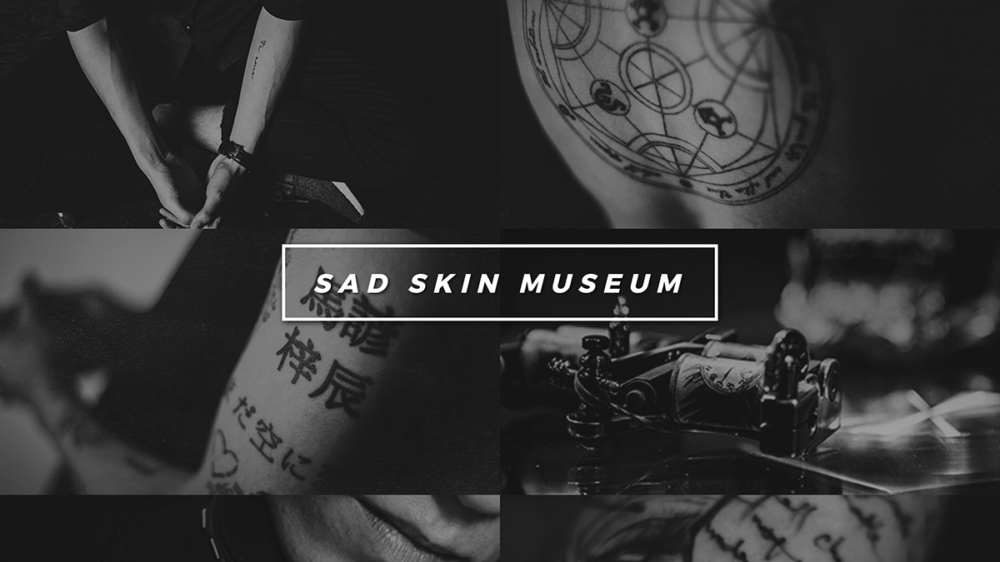
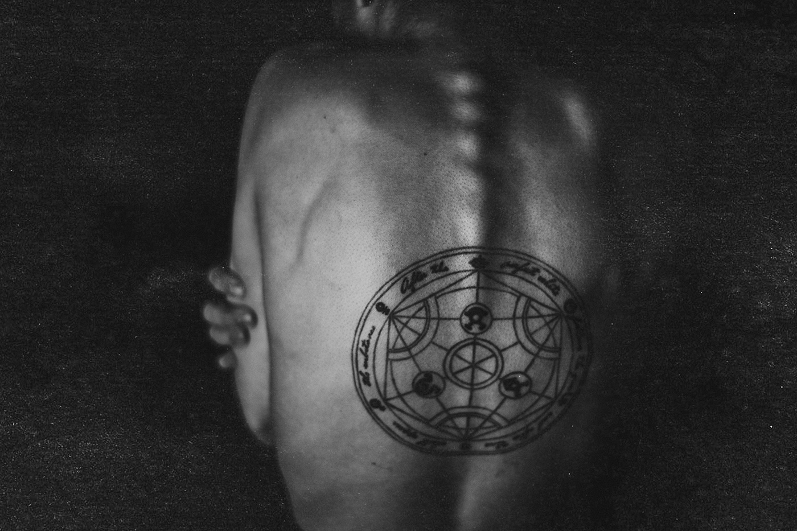
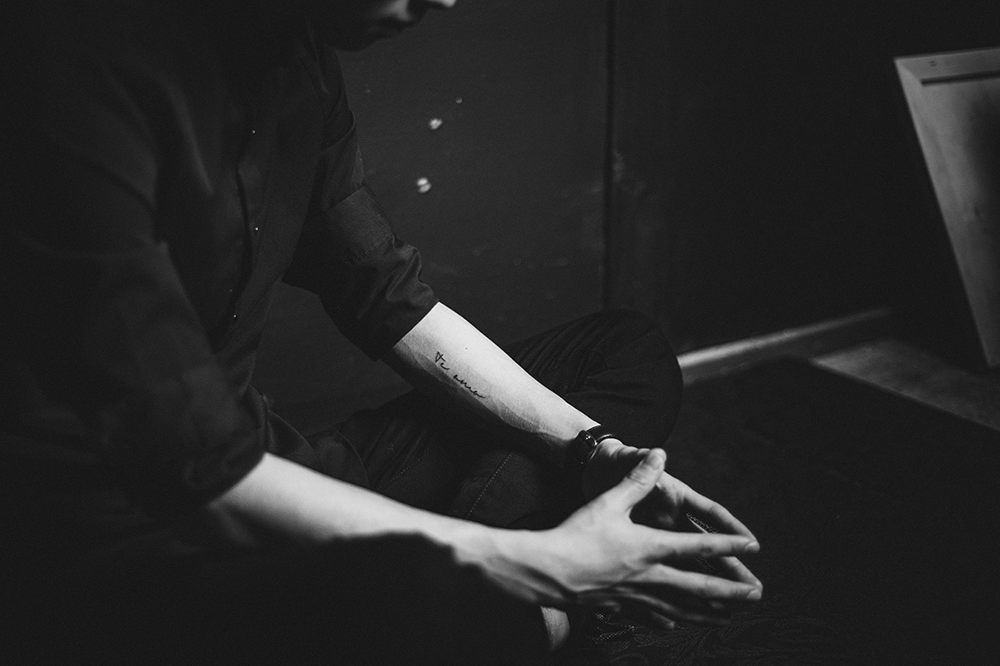
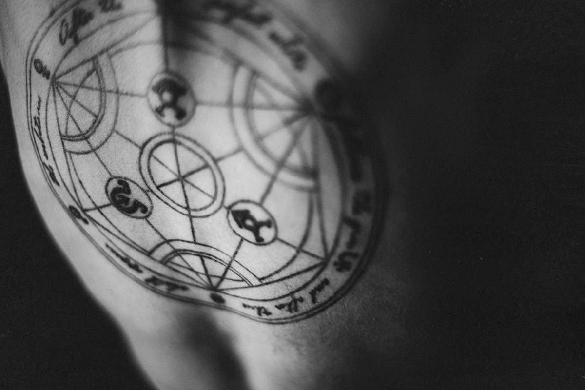
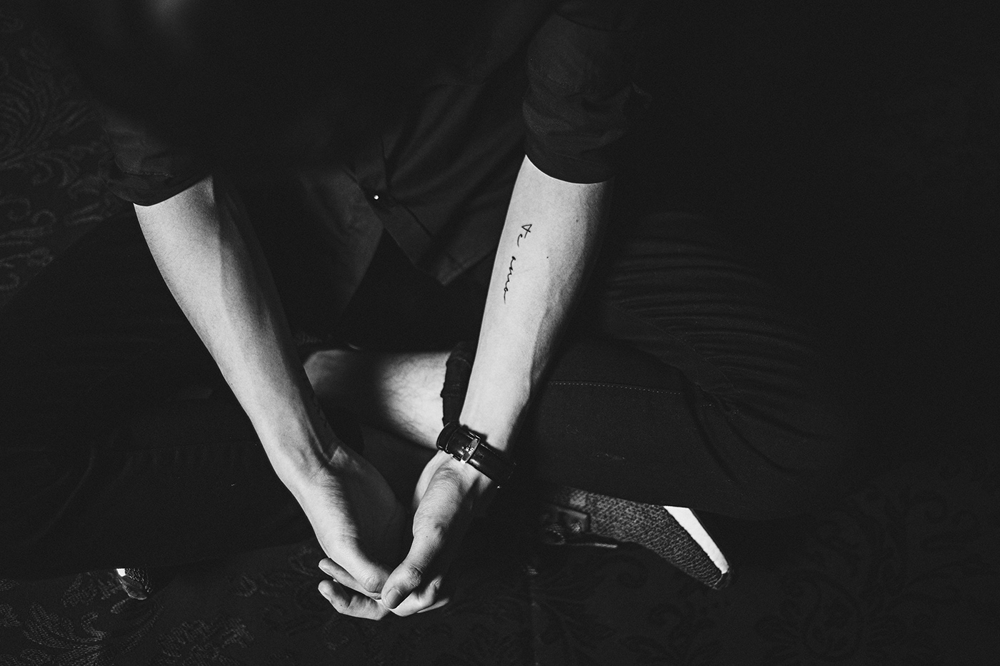

sad skin museum (2016)
web, text, video.

sad skin museum is a project that documents love and loss through interactive in-browser storytelling experience that consists of videos, photographs, text, and interview recordings. this project investigates unique interpersonal relationships between two individuals, regardless of the types of bond they once had, in the form of body ink. the tattoos from the collection are the reminders of a specific sad event or an intimate story that involves a person the contributor once loved and lost, and the public is welcome to submit their ink.
_
web development / photography / videography: yi shi
quick website walk-through.
_
special thanks to barry, edward, and ricky for sharing their stories.



